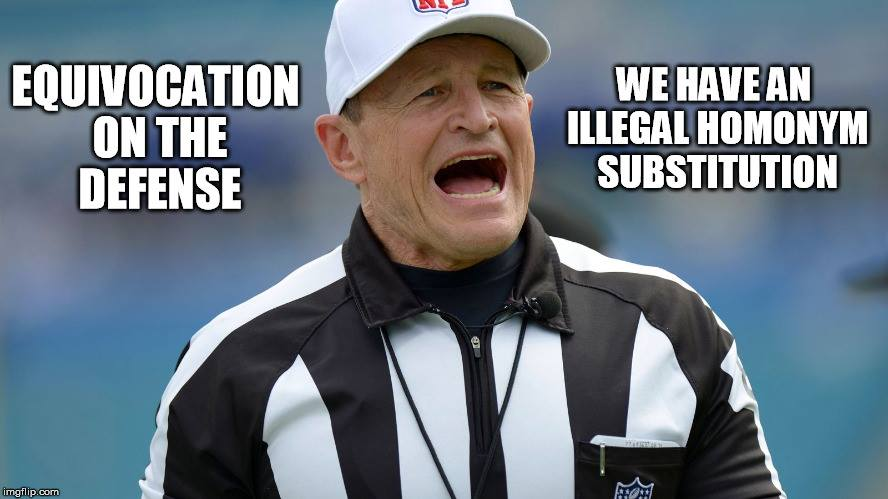
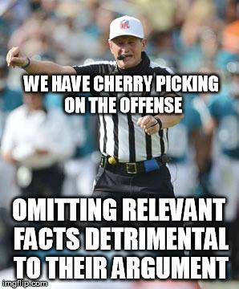

The next set of fallacies relies on the fact that many terms have multiple meanings. Switching between meanings without acknowledging that one is doing so is a way of making invalid reasoning look valid. Closer examination reveals arguments that do this to be weaker than at first glance. Here we will consider just two examples. Many more often appear in debates.
People in jail are really free.
This is because if you can think whatever you want, then you are free and people jail can certainly think whatever they want.

Glen Welch, fallacy ref
Equivocation is using multiple meanings of a word as if they were the same. We start out with one meaning of a word like “freedom” and end up with another meaning, in the attempt to fool the person who is listening to us that our reasoning is valid. Used car dealers sometimes use a tactic known as “bait and switch” that is similar to this -– they advertise great deals in the paper and then when you show up to their lot they have something else similar but not quite as good a deal that they offer you instead.
The senator who suggested cutting funding for the new Air Force attack drone system really wants to leave us defenseless against our enemies.
Thus we should reject such cuts.
This fallacy often appears in the context of a debate in which one person misrepresents his or her opponent’s view in order more easily, as with a person made of straw, to knock it down. This is a fallacy of ambiguity in that it relies on a superficially similar version of the view that is being attacked rather than the view itself. One can often “win” debates by using this strategy, but such victories are hollow in that they do not really engage with the real issues but only with caricature. If you really want to demonstrate that some view you are attacking is worthy of rejection, it is far better to rely on the “principle of charity” which involves presenting your opponent’s view in as favorable a light as possible. If it still fails to withstand scrutiny, then perhaps you are wrong to reject it. he drawback, however, is that if you represent your opponent’s views in a more fair and favorable light, your objections to them may themselves not hold up. But then again, that is only a drawback if you care more about winning debates rather than in figuring out what is really the case.
This study of 12 children clearly shows a link between childhood vaccination and autism.
Thus vaccines cause autism.

Glen Welch, fallacy ref
This one is really no joke – in fact the whole of the current scare about childhood vaccinations and autism was “established” by a single study of twelve children! The fact that the paper was retracted, and its author was barred from medical practice didn’t matter since its influence only grew since the date of its publication. The logical mistake here is that of selectively reading the evidence in favor of your own hypothesis, or “cherry picking” the data to get the juiciest bits while ignoring anything that contradicts it. The other name for this fallacy, “Texas sharpshooter” refers to the related practice of proving your worth as a target shooter by first shooting random holes in the side of a barn, and then afterwards drawing your target around a cluster of holes so that it looks like you are a great shot. Is this done in Texas? Probably not, but whoever named it must have had a low opinion of Texans – no offense intended and if you are from Texas, substitute your state of choice.